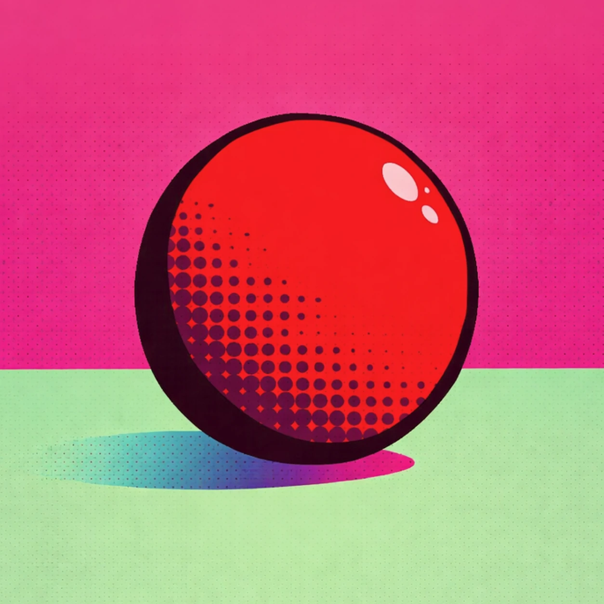
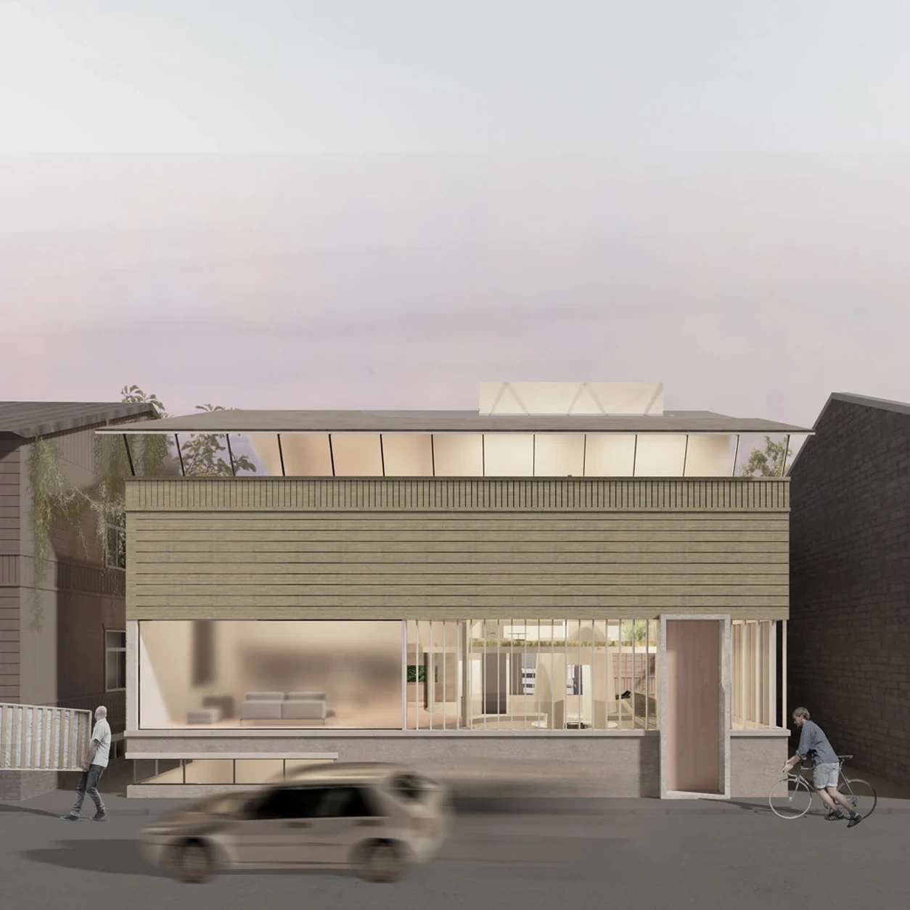
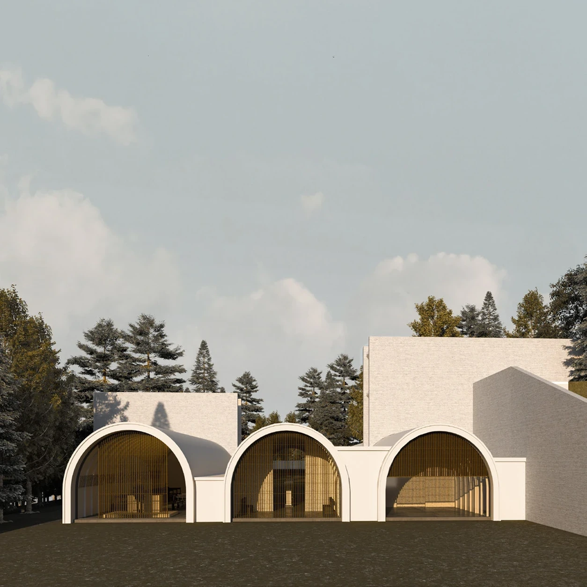
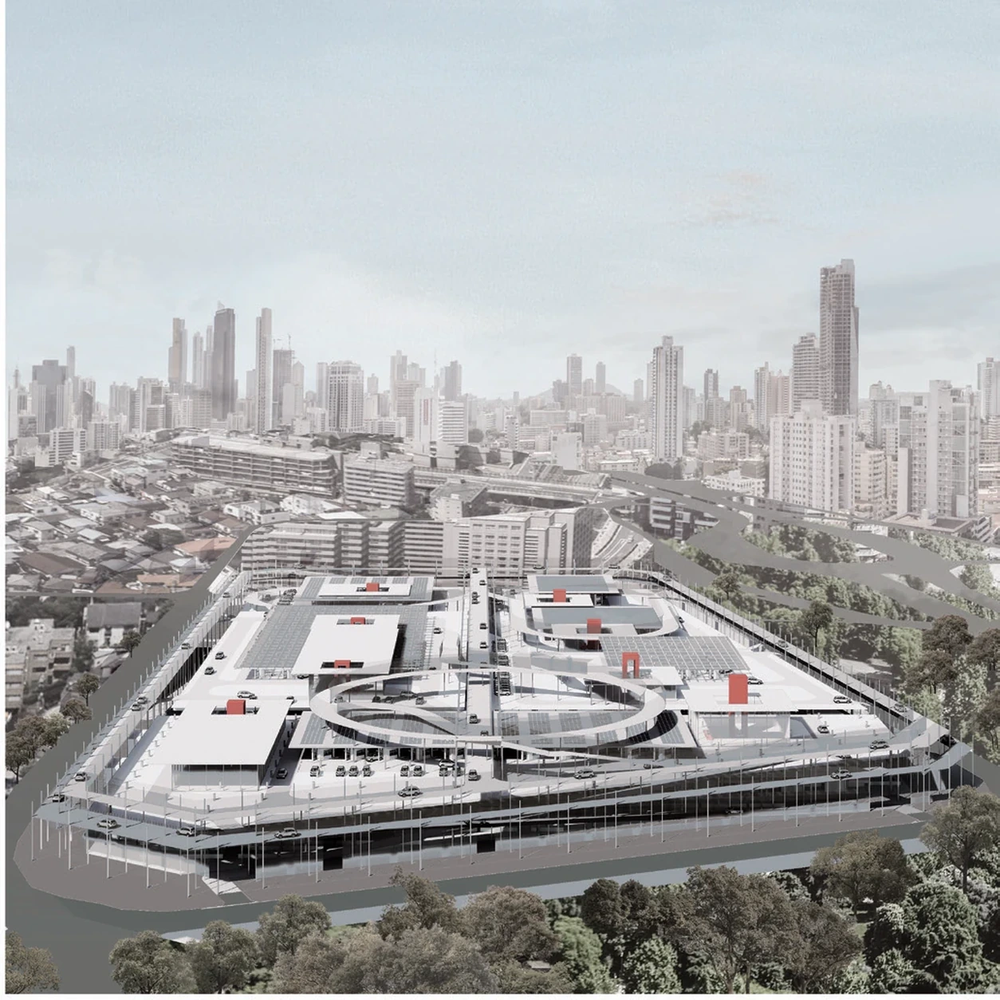
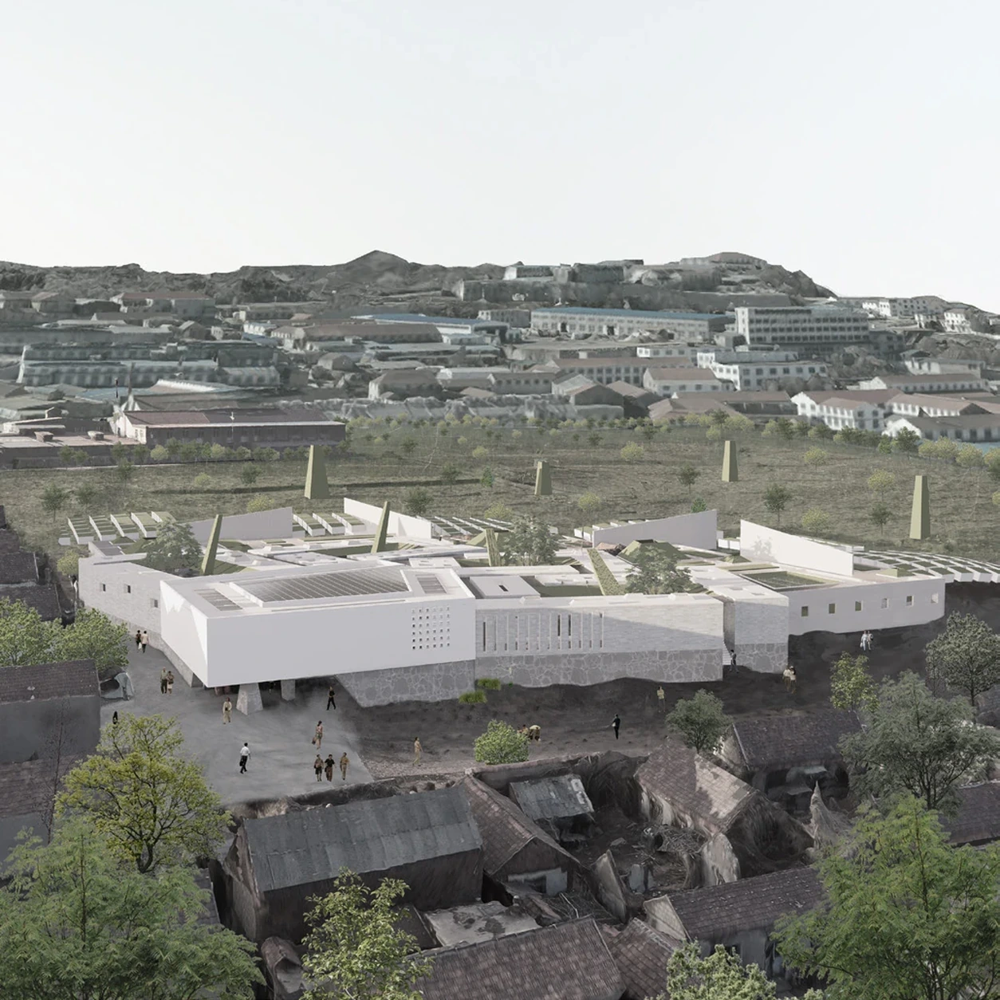
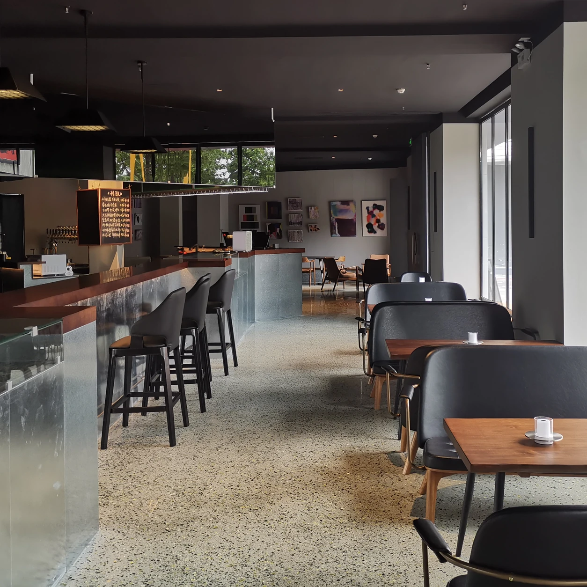
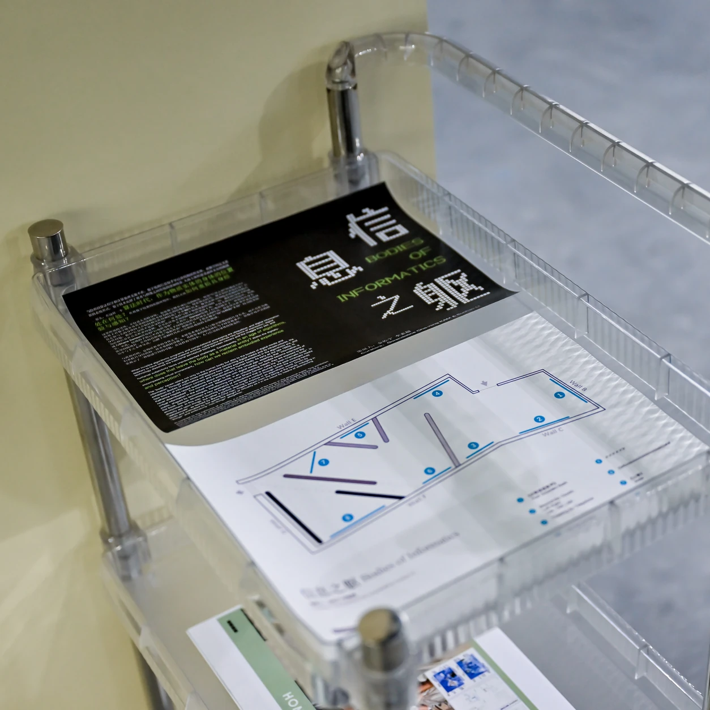
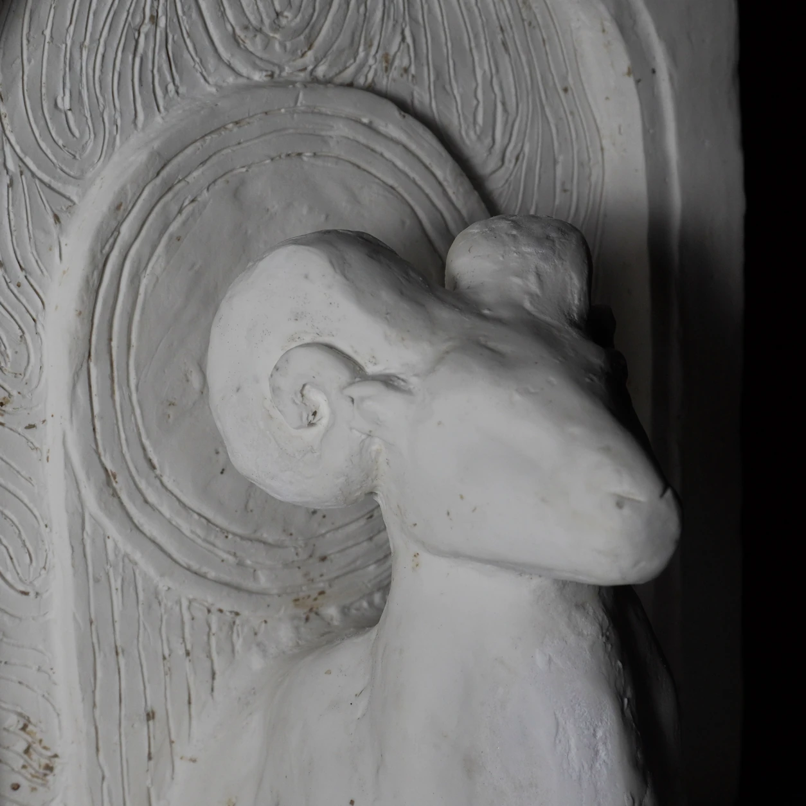
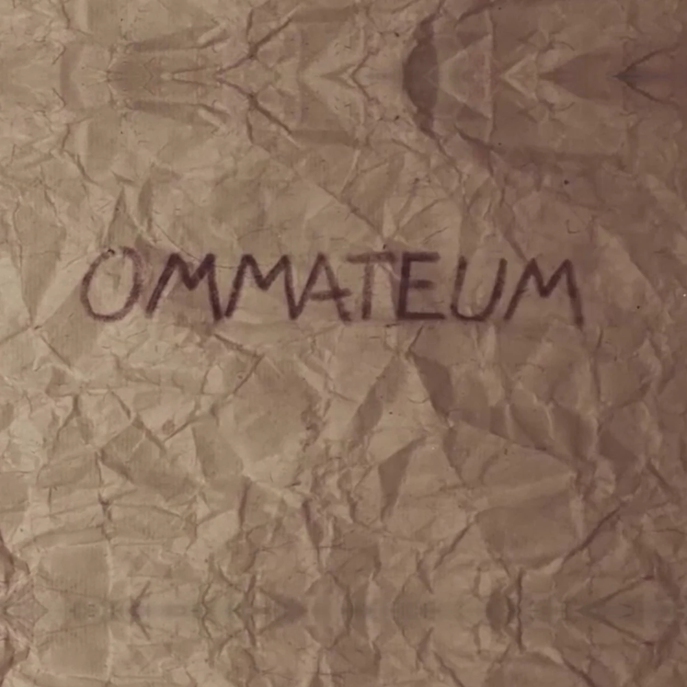

SELECTED WORKS
Index.
作品目录
13 WORKS / 全部作品

尖尖奇旅
Grow Shrink Venture
游戏 · 关卡设计 · 个人作品

时之诅咒
The Curse of Time
游戏 · 关卡设计 · 个人作品

相位匕首：创生档案
Phase Dagger: Genesis Dossier
游戏 · 关卡设计 · 个人作品

迷失之塔
The Dantean Spire
游戏 / 其他 · 空间叙事 / 动画 · 小组作品

躲避球
DODGEBALL
游戏 · 关卡设计 · 合作作品

思维阁
Thought Cabinet
建筑 · 住宅设计 / 空间叙事 · 个人作品

阻隔
The Obstruction
建筑 · 纪念馆设计 · 个人作品

城市之肺
The Lung of City
建筑 · 公共建筑 / 动线系统 · 个人作品

废墟植物园
Ruins Botanical Garden
建筑 · 毕业设计 / 景观建筑 · 个人作品

声音共和
Voice Republic Music Bar
建筑 · 音乐酒吧 / 室内建筑 · 职业项目

信息之躯
Bodies of Informatics
展览 · 展陈设计 · 合作项目

动物雕塑
Animal Sculpture
其他 · 雕塑 · 本科作品

复眼
OMMATEUM
其他 · 定格动画 · 合作作品
TO BE CONTINUED
作品整理中
新的作品正在整理，稍后会在这里与你见面。
返回作品集，查看待更新专辑 ↗